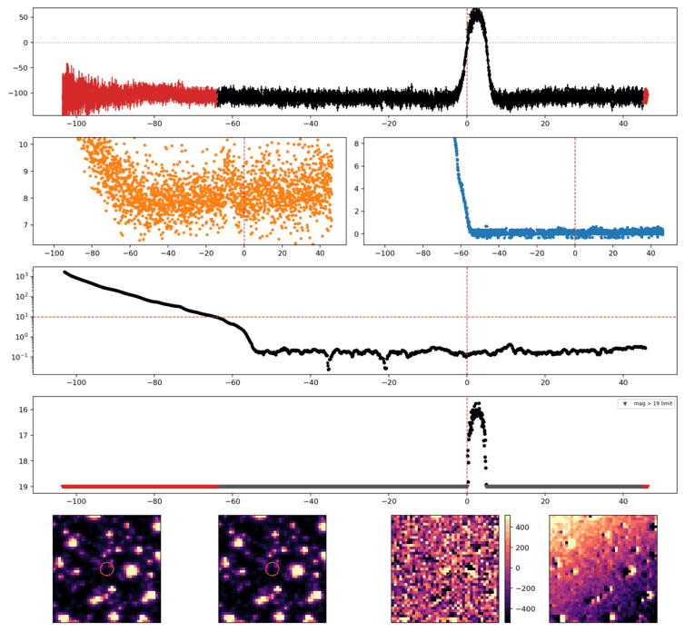
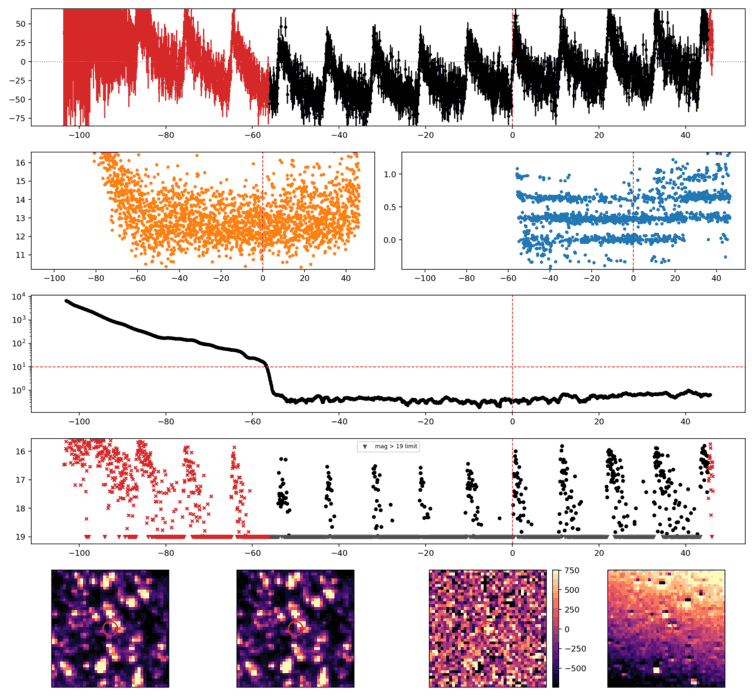
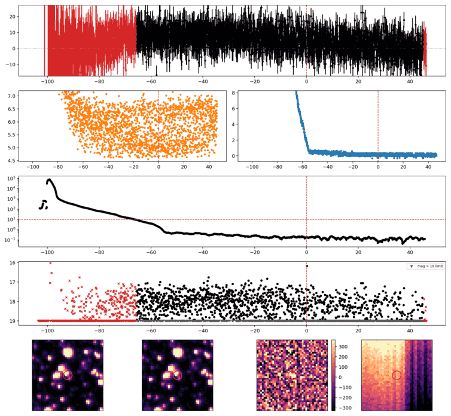
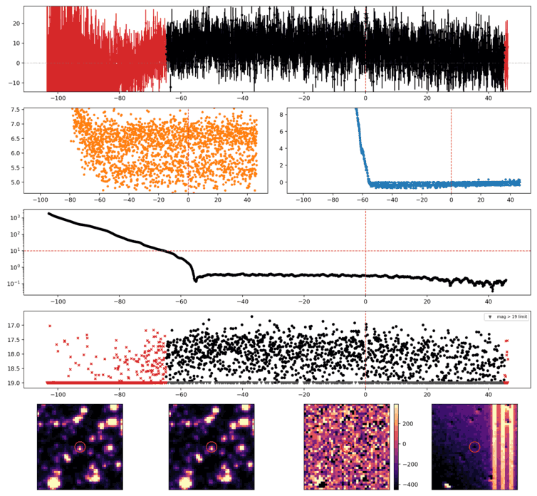
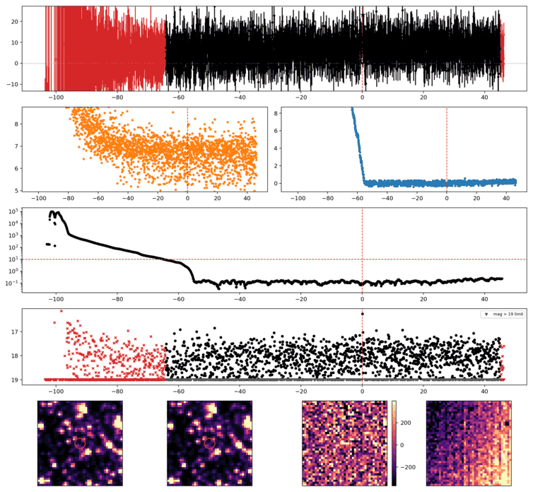
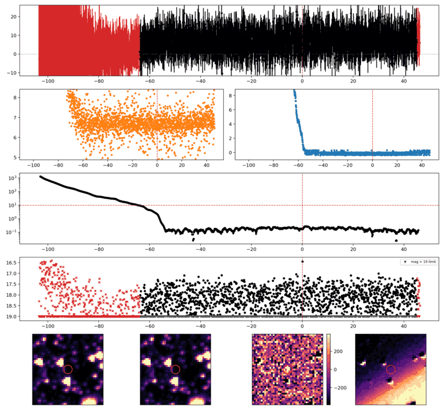
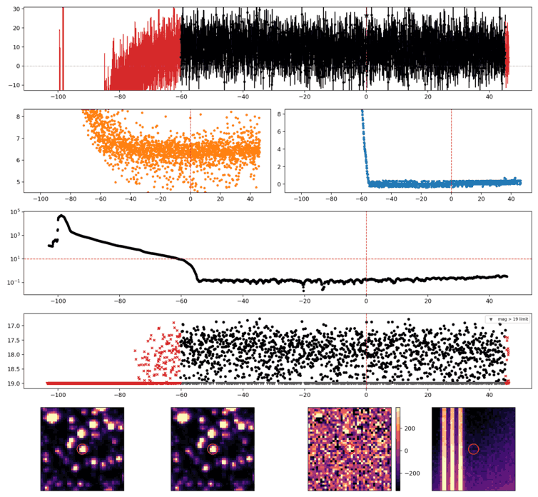
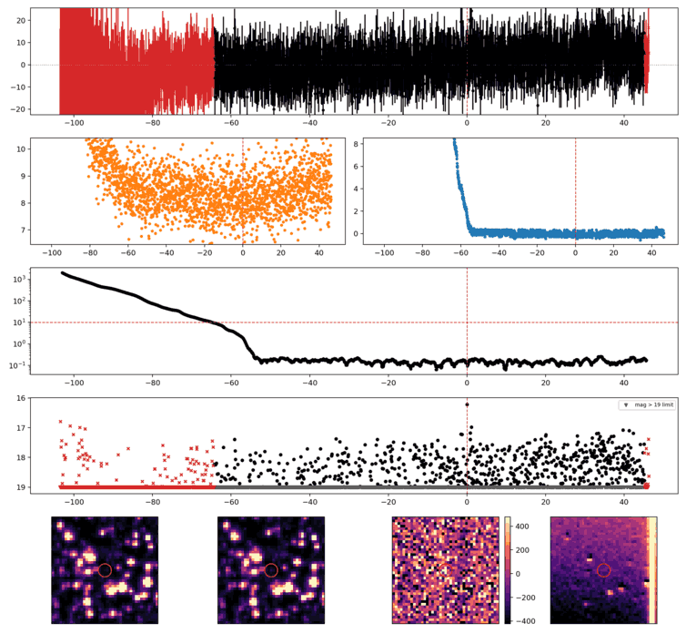
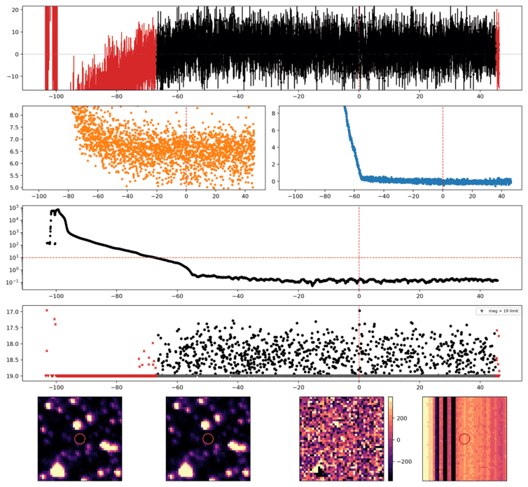

Search centered on refined position (281.6518938, -43.2723369 deg). Gaia coordinates are at J2016.0; proper motions are shown, without epoch propagation. A positional match does not change the candidate flags.
No Gaia DR3 sources found within 5 arcseconds.
Retrieved 2026-10-21T02:01:44.991743+00:00

Search centered on refined position (266.7071708, -42.1286270 deg). Gaia coordinates are at J2016.0; proper motions are shown, without epoch propagation. A positional match does not change the candidate flags.
| Source ID / catalog entry | Separation (arcsec) | RA (deg) | Dec (deg) | G (mag) | BP (mag) | RP (mag) | Parallax ± error (mas) | PM RA* ± error (mas/yr) | PM Dec ± error (mas/yr) | RUWE | Variability |
|---|---|---|---|---|---|---|---|---|---|---|---|
| 5957304666744381568 | 3.355 | 266.7066189 | -42.1277898 | 17.592 | 18.157 | 16.879 | 0.269 ± 0.116 | -3.501 ± 0.111 | -3.383 ± 0.080 | 0.973 | NOT_AVAILABLE |
| 5957304666744377344 | 3.532 | 266.7072745 | -42.1296051 | 16.318 | 16.741 | 15.709 | 0.031 ± 0.058 | 0.527 ± 0.059 | -7.373 ± 0.038 | 1.053 | VARIABLE |
Retrieved 2026-10-21T02:01:46.955255+00:00

Search centered on refined position (312.3518187, -51.1238162 deg). Gaia coordinates are at J2016.0; proper motions are shown, without epoch propagation. A positional match does not change the candidate flags.
No Gaia DR3 sources found within 5 arcseconds.
Retrieved 2026-10-21T02:01:48.260656+00:00

Search centered on refined position (280.7306551, -57.3844522 deg). Gaia coordinates are at J2016.0; proper motions are shown, without epoch propagation. A positional match does not change the candidate flags.
| Source ID / catalog entry | Separation (arcsec) | RA (deg) | Dec (deg) | G (mag) | BP (mag) | RP (mag) | Parallax ± error (mas) | PM RA* ± error (mas/yr) | PM Dec ± error (mas/yr) | RUWE | Variability |
|---|---|---|---|---|---|---|---|---|---|---|---|
| 6637411638554560128 | 3.797 | 280.7323197 | -57.3850065 | 13.198 | 13.673 | 12.562 | 3.713 ± 0.013 | 8.421 ± 0.011 | 4.966 ± 0.009 | 1.001 | VARIABLE |
Retrieved 2026-10-21T02:01:49.021777+00:00

Search centered on refined position (283.4354717, -65.4323540 deg). Gaia coordinates are at J2016.0; proper motions are shown, without epoch propagation. A positional match does not change the candidate flags.
No Gaia DR3 sources found within 5 arcseconds.
Retrieved 2026-10-21T02:01:49.767262+00:00

Search centered on refined position (293.4754382, -49.6962953 deg). Gaia coordinates are at J2016.0; proper motions are shown, without epoch propagation. A positional match does not change the candidate flags.
No Gaia DR3 sources found within 5 arcseconds.
Retrieved 2026-10-21T02:01:50.517322+00:00

Search centered on refined position (296.0848782, -52.9593931 deg). Gaia coordinates are at J2016.0; proper motions are shown, without epoch propagation. A positional match does not change the candidate flags.
No Gaia DR3 sources found within 5 arcseconds.
Retrieved 2026-10-21T02:01:51.264324+00:00

Search centered on refined position (283.8804521, -55.0711734 deg). Gaia coordinates are at J2016.0; proper motions are shown, without epoch propagation. A positional match does not change the candidate flags.
No Gaia DR3 sources found within 5 arcseconds.
Retrieved 2026-10-21T02:01:52.011806+00:00

Search centered on refined position (306.1104502, -48.5359636 deg). Gaia coordinates are at J2016.0; proper motions are shown, without epoch propagation. A positional match does not change the candidate flags.
No Gaia DR3 sources found within 5 arcseconds.
Retrieved 2026-10-21T02:01:52.759693+00:00